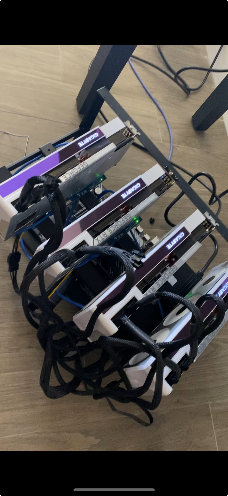
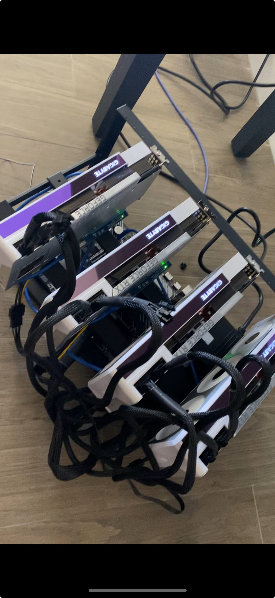

Hi, my name is Perry and I’m graduating this Spring from the University of Miami with a Bachelor of Science in Interactive Media. Relevant coursework has led me to a plethora of interests that I’ve honed into skills. My advanced use of a computer has made me a digitally literate individual who understands all standards for software and the web.
I’ve spent my time working or interning for different companies. Recently I was an intern at North American Concrete Company where I was able to optimize input of invoices. Given this position I immediately set out to improve efficiency, my digital literacy, combined with people skills, allowed me to talk to the right people to optimize how they did this digital process. I’m never afraid to ask questions or reach out to anyone I’m working with, in return I strive to be a dependable member of a team who adds value to any company. I think innovation and the welcoming of change is vital in awork environment, which is why I love the fast paced industry I have specialized in.
During long breaks from school, I would naturally find a project to do. One break I built a home server in my basement, another time I dove into the world of crypto mining by building my own rigs, I’ve built over 10 computers for friends or family. I have a tendency to find out how things work and enjoy the work that goes into creating something yourself. Being the youngest in my family it was only natural that, other than my father, I was the first in my family with a computer. I remember how fascinated I was by the technology, this fascination has only grown.
Works >
Explore my portfolio of projects and accomplishments.
Wikipinion >
Wikipinion: A Comparative Opinion Platform
Wikipinion is an innovative web platform that empowers users to share and compare their opinions on diverse topics. This PHP-based website offers a unique user experience, allowing individuals to post articles that feature a title, an accompanying image, and a paragraph section dedicated to expressing their viewpoint. The core theme of Wikipinion is to foster a community where users can juxtapose two distinct subjects based on their personal perspectives, hence the portmanteau "Wikipinion."
The website was meticulously crafted using a combination of HTML, CSS, PHP, and MySQL, ensuring a seamless and responsive user interface. Each article submission is efficiently managed and stored using a robust MySQL database, providing a reliable and scalable solution for handling user-generated content. The deployment of the website was facilitated by FileZilla, ensuring a smooth and secure transfer of files to the hosting server.
Wikipinion stands as a testament to the power of collaborative opinion sharing, offering a platform where diverse perspectives can converge and be appreciated. This project showcases not only technical proficiency in web development but also a commitment to creating a space for meaningful discourse and community engagement.
HiveOS Mining Rigs>
Mining rigs: what I did and how I did it...
I successfully designed and built two Ethereum mining rigs, leveraging my skills in hardware assembly and software management. My hands-on experience includes sourcing high-performance components tailored for optimal mining efficiency.
I expertly installed and configured HiveOS, a Linux-based operating system, to create the rigs' operational capabilities. My proficiency in managing and troubleshooting HiveOS ensures peak performance and sustained mining productivity, reflecting my comprehensive understanding of both hardware and software in complex mining setups.

 

SnapGolf>
Python driven human iteraction device turned game
In another innovative project, SnapGolf, I combined my expertise in interactive design and software development to create an engaging and interactive game that responds to physical gestures. Utilizing Python, I developed a unique hardware-software interface, with python, that detects the sound of a finger snap to activate a motor, propelling a mini "golf ball" towards a target. This game integrates complex sensory outputs including lights and sounds to enhance user engagement.
The successful interaction, where players score by getting the ball into the hole, highlights my ability to translate user interactions into dynamic and enjoyable experiences, blending physical actions with digital responses effectively.